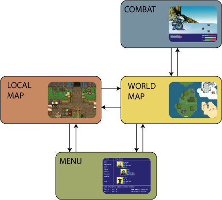
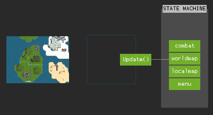
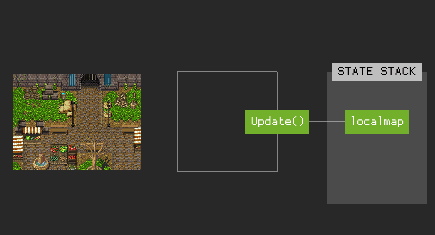

Introduction
Presentation
This book will teach you everything you need to know about building video games
with the libgote. I'll try to add information about the various aspects of the
library and how you can link them together to make a complete video game.
Refer to the API documentation for an in-depth detail of all the functions provided by the library.
Building from source
Cloning the repository
Using SSH
Make sure your SSH key is linked to your GitHub account.
git clone git@github.com:nasso/libgote.git
Using HTTPS
git clone https://github.com/nasso/libgote.git
Building libgote
Just navigate in the root directory of the repository and call make:
cd libgote
make
If you want to build it with debug flag (-g3), add DEBUG=1 to the make
command:
make DEBUG=1
Generating the documentation
The library documentation is generated using Doxygen. A online version is available [here][doc].
First, make sure the ./target directory exists at the root of the repository.
It is automatically created when building the library, but you can also use
mkdir.
Concepts
This chapter will give you an overview of the different concepts you need to be
familiar with to use libgote.
Some of those concepts aren't specific to libgote and you will easily find
more resource online about them: entity-component-system (ECS), game states and
game assets.
State
Basics
As described in this article, a state (or game-state) represents a "mode" our game is in. For instance, we could separate an RPG in different game states:
- A "local map" state where the player can move around a terrain
- A "world map" state where a zoomed-out map of the world is displayed
- A "combat" state for fights!
- A "pause menu" state displaying the pause menu of the game
- ...

Essentially, every state has its own start, stop and update functions.
Usage
To create a state with the libgote, use calloc to allocate a
gt_state_t structure and set the callback functions you care about:
gt_state_t *create_combat_state(void)
{
gt_state_t *state = my_calloc(1, sizeof(gt_state_t));
state->update = &combat_state_update;
return (state);
}
Of course, update isn't the only callback available to game states. Here is
a list of the most commonly used:
- on_start - called when the state starts.
- on_stop - called when the state stops.
- update - called on every iteration of the game loop while the state is active.
- destroy - called when the state is destroyed, use it to free the
selffield.
The libgote will safely ignore any callback set to NULL. This is why you
should use calloc to allocate the gt_state_t structure (calloc ensures
all the allocated bytes are set to NULL or 0).
The self field allows you to store arbitrary data associated with your state.
Its value is passed as an argument to all the callbacks. In most cases, you will
use it to keep a reference to data you want to clean-up when the state is
stopped:
/* Structure holding the data associated with the state */
struct combat_state {
player_t *player;
};
/* Create the player when the state starts */
static void combat_state_on_start(void *ptr, gt_state_data_t *data)
{
struct combat_state *self = ptr;
self->player = player_create(data->world);
}
/* Remove the player when the state stops */
static void combat_state_on_stop(void *ptr, gt_state_data_t *data)
{
struct combat_state *self = ptr;
player_remove(self->player, data->world);
}
/* Create the state, its data structure, and set the callbacks */
gt_state_t *create_combat_state(void)
{
gt_state_t *state = my_calloc(1, sizeof(gt_state_t));
state->self = my_calloc(1, sizeof(struct combat_state));
state->destroy = &my_free;
state->on_start = &combat_state_on_start;
state->on_stop = &combat_state_on_stop;
return (state);
}
Make sure not to forget to set state->destroy to an appropriate freeing
function! If you don't do it, memory WILL leak!
State machine
Game states are usually managed by something called a state machine. It is the one responsible for calling the right function at every iteration of the game loop. Only one state can be active at a time!

The state machine is often implemented as a stack, where states can be pushed and popped. The state at the top of the stack is the active state.

Transitions
A change in the state machine's stack is called a state transition. There
are 4 different kinds of transitions in the libgote:
- Push transitions - a state is pushed on top of the stack: it becomes the active state.
- Pop transitions - the state on top of the stack is removed (the state below it, if any, becomes active).
- Switch transitions - the state on top of the stack is replaced with another state.
- Quit transitions - all the states are removed from the stack, killing the the state machine.
As soon as the state stack becomes empty, the state machine is killed and the game is effectively terminated.
Additionnal callbacks
In the libgote, states have actually 3 extra callbacks I didn't mention yet.
You might need them in some special cases:
- on_pause - called when a state is pushed on top of the current one.
- on_resume - called when the state above gets popped.
- shadow_update - same as
update, but is called on ALL the states in the stack.